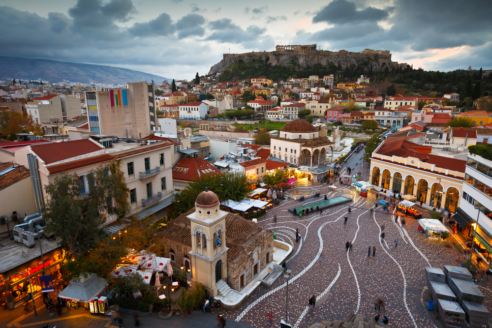
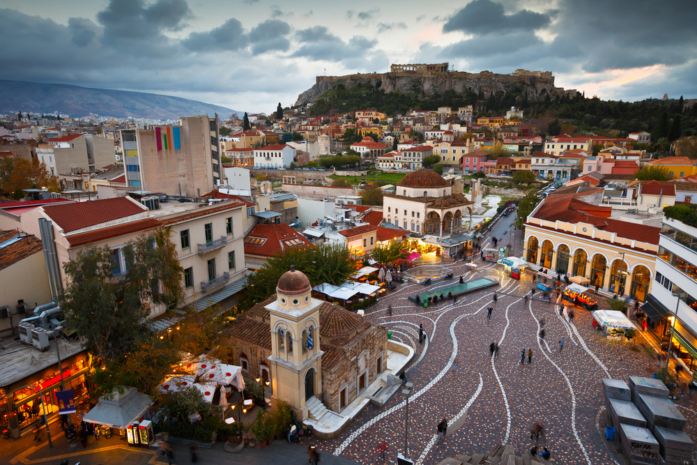

| Loc | Numele orașului | Statul | Populația |
|---|---|---|---|
| 1 | Paris | Franța | 12.183.893 |
| 2 | Madrid | Spania | 6.549.520 |
| 3 | Barcelona | Spania | 5.514.881 |
| 4 | Berlin | Germania | 5.259.363 |
| 5 | Ruhr | Germania | 5.113.487 |
| 6 | Roma | Italia | 4.355.725 |
| 7 | Milano | Italia | 4.336.121 |
| 8 | Atena | Grecia | 3.576.590 |
| 9 | Hamburg | Germania | 3.309.215 |
| 10 | Amsterdam | Țările de Jos | 3.242.852 |


 
